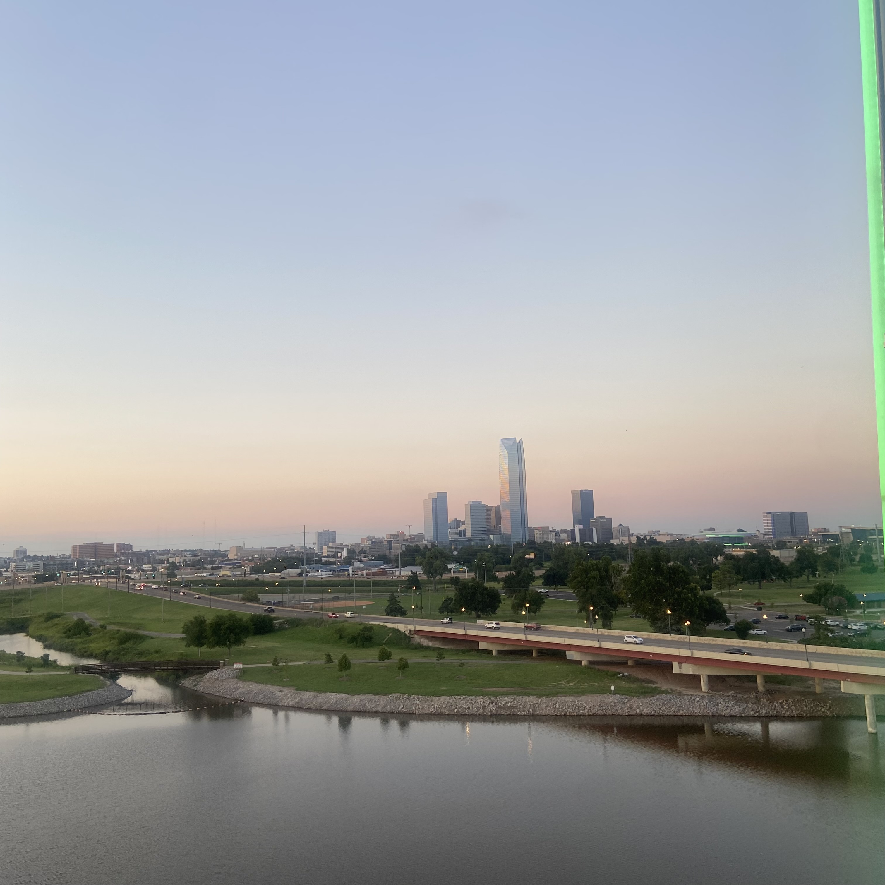

|  | |
My name is Alondra Moreno. I was born and raised in Oklahoma City, but have always been in love with Colorado since I was about 8 years old.
My passion for software development and coding began when I was 14, as a freshman in Highschool.
Currently, I am a Junior at the University of Denver, majoring in Computer Science and minoring in Psychology and Construction Management.
Check out my blog or my gallery to see some images or real life thoughts about my intrests and hobbies.